HYD · 실습 가이드Cypher 기본 문법을 실행하고 설비에 적용하기
연결된 대상을 확인하고, 결과의 근거를 원자료와 대조합니다.
01 예제 준비하기
VS Code 터미널에서 실행하세요.
python prepare_example.py
예제 준비 완료: 노드 20개 · 관계 19개가 표시됩니다. 이 예제는 HYD-01 한 대의 설비 구성입니다.
python lab_db.py
열린 연결 창의 Protocol이 bolt://이고 Connection URL이 터미널의 현재 주소와 같은지 확인하세요. Database user는 neo4j, Password는 비워 두고 Connect를 누릅니다. 주소가 비어 있다면 터미널의 127.0.0.1:포트 값을 넣으세요.
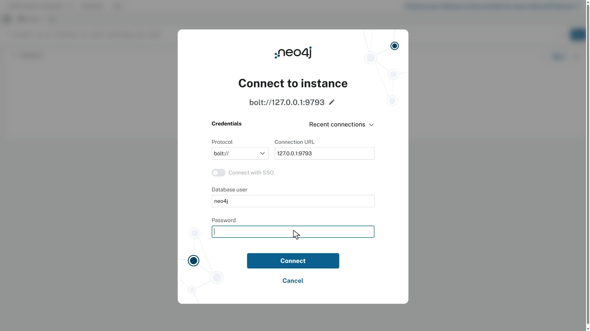
실습 링크를 열면 나타나는 연결 창. 주소는 자신의 터미널 출력과 대조하세요. · 누르면 크게 보기02 작은 예제 만들고 조회하기
위쪽 입력칸에서 한 문장씩 실행합니다. CREATE는 새 노드를 만듭니다. 이 생성 문장은 한 번 실행하세요.
CREATE (a:연습장치 {id:'basic-A', name:'연습 펌프', score:40}),
(b:연습장치 {id:'basic-B', name:'연습 팬', score:70})
RETURN a.name AS name, a.score AS score, b.name AS other_name, b.score AS other_score;연습 펌프의 score는40, 연습 팬은70입니다.
MATCH로 연습장치를 찾고 RETURN에 이름과 점수를 적습니다. ORDER BY score는 점수가 작은 순서로 정렬합니다.
MATCH (n:연습장치)
RETURN n.name AS name, n.score AS score
ORDER BY score;
연습 펌프40, 연습 팬70의 두 행이 나옵니다.
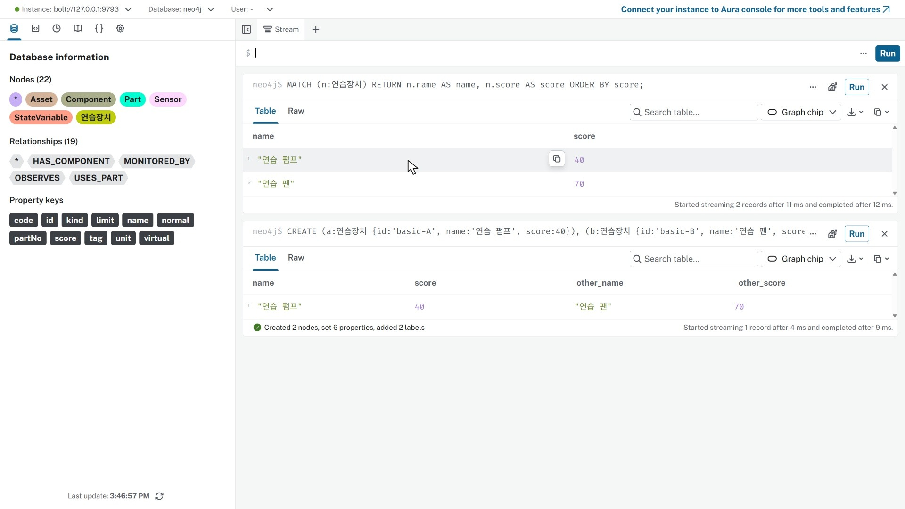
만든 노드 두 개를 MATCH로 다시 조회 · 누르면 크게 보기03 조건을 바꾸고 결과 비교하기
WHERE로 score가50 이상인 행을 고릅니다.
MATCH (n:연습장치)
WHERE n.score >= 50
RETURN n.name AS name, n.score AS score;
연습 팬70 한 행만 나옵니다.
50을30으로 바꾸고 다시 실행합니다.
MATCH (n:연습장치)
WHERE n.score >= 30
RETURN n.name AS name, n.score AS score
ORDER BY score;
연습 펌프40과 연습 팬70이 다시 나옵니다. 조건에서 제외된 노드도 저장돼 있습니다.
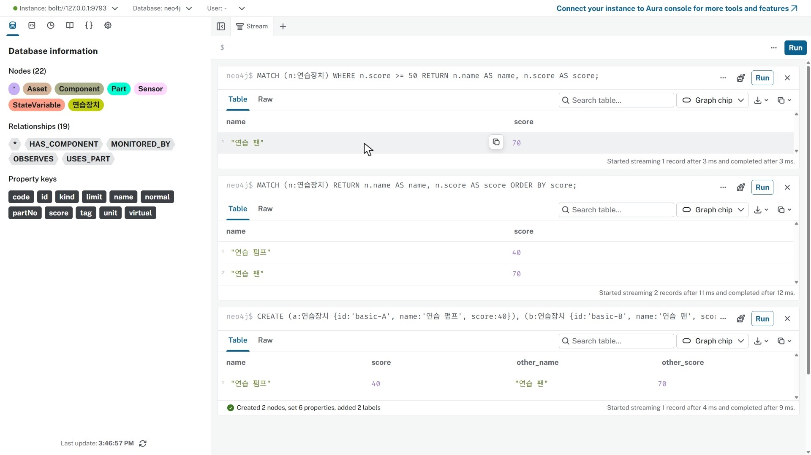
조건에 따라 달라지는 조회 결과 · 누르면 크게 보기04 같은 대상 찾아 수정하기
MERGE는 패턴이 있으면 찾아 쓰고 없으면 만듭니다. id로 찾을 대상을 정하고 SET에 저장할 속성을 적습니다.
MERGE (s:연습센서 {id:'basic-S1'})
SET s.name='연습 온도 센서', s.unit='℃'
RETURN s.id AS id, s.name AS name, s.unit AS unit;같은 MERGE와 SET을 다시 실행하고 등록된 센서 수를 확인합니다.
MERGE (s:연습센서 {id:'basic-S1'})
SET s.name='연습 온도 센서', s.unit='℃'
WITH s
MATCH (n:연습센서)
RETURN count(n) AS sensor_count;sensor_count는1입니다. WITH s는 앞 단계의 변수 s를 다음 단계로 넘깁니다. 여기서는 이어지는 MATCH로 전체 연습센서를 찾아 셉니다.
이번에는 SET의 이름만 바꿉니다.
MERGE (s:연습센서 {id:'basic-S1'})
SET s.name='연습 유온 센서'
RETURN s.id AS id, s.name AS name, s.unit AS unit;id와 unit은 그대로이고 name은 연습 유온 센서로 바뀝니다. MERGE와 동시 등록의 중복을 막는 유일 제약은 구분합니다.
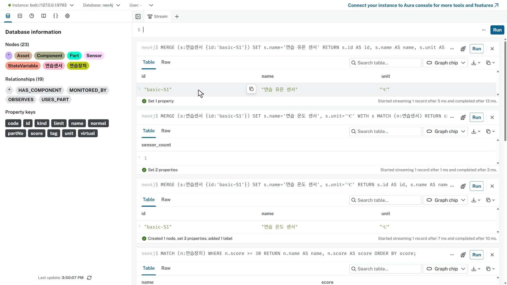
식별자는 유지하고 이름만 수정 · 누르면 크게 보기05 관계 만들고 그림으로 확인하기
MATCH로 두 노드를 찾고 MERGE로 관측 관계를 만듭니다.
MATCH (p:연습장치 {id:'basic-A'}), (s:연습센서 {id:'basic-S1'})
MERGE (p)-[r:관측]->(s)
RETURN p.name AS device, type(r) AS relationship, s.name AS sensor;연습 펌프 → 관측 → 연습 유온 센서의 한 행이 나옵니다.
같은 연결에서 속성값 대신 노드·관계를 반환합니다.
MATCH (p:연습장치 {id:'basic-A'})-[r:관측]->(s:연습센서)
RETURN p,r,s;Graph에 노드2개·관계1개가 나옵니다. 변수 p·s는 노드, r은 관계를 가리킵니다.
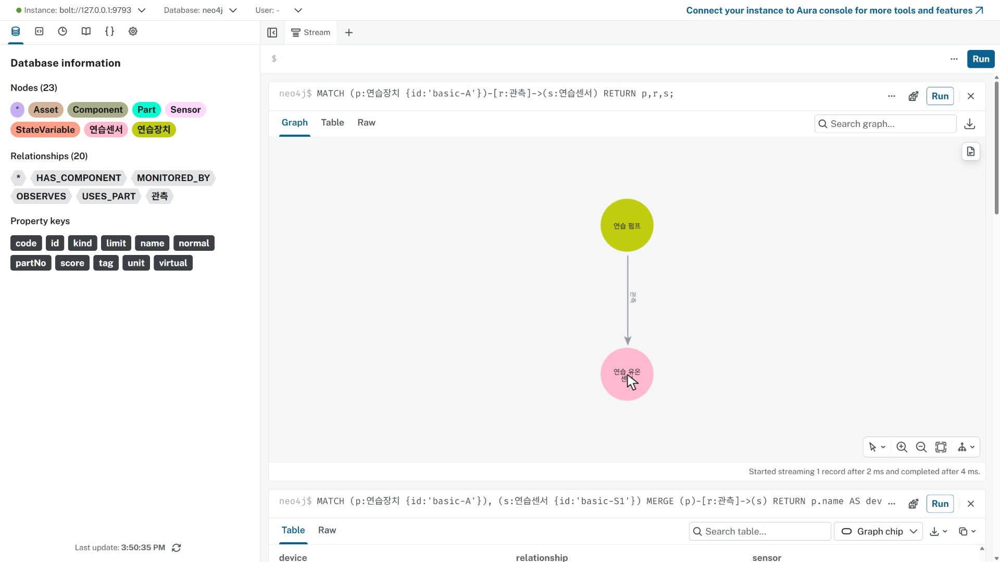
표에서 확인한 같은 연결을 Graph로 보기 · 누르면 크게 보기06 연습 정리하고 설비에 적용하기
이번에 만든 연습장치와 연습센서만 찾아 삭제합니다. DETACH DELETE는 해당 노드와 연결된 관계를 함께 지웁니다.
MATCH (n)
WHERE (n:연습장치 AND n.id IN ['basic-A','basic-B'])
OR (n:연습센서 AND n.id='basic-S1')
DETACH DELETE n
RETURN count(n) AS removed;
removed는3입니다. 준비된 설비의 노드20개·관계19개는 남습니다.
입력칸에서 :clear를 실행해 카드만 비웁니다. 이제 같은 문법으로 아래 설비 연결을 탐색합니다. 실행한 문장은 기본문법_연습.cypher에서도 확인할 수 있습니다.
07 전체 설비 지도 읽기
Browser 위쪽 입력칸에 문장을 넣고 Run을 누르세요. HYD-01에서 한 단계부터 세 단계까지 이어지는 경로를 봅니다.
MATCH p=(a:Asset {code:'HYD-01'})-[*1..3]->(n)
RETURN p;왼쪽 패널과 그래프 상세 창을 접습니다. 그래프 아래 Select layout → Hierarchical layout을 선택하고 Zoom to fit을 누르세요.
설비 아래 구성요소가 있고, 구성요소에서 센서·부품으로 갈라집니다. 센서 아래에는 물리량이 있습니다. 전체 노드20개·관계19개입니다.
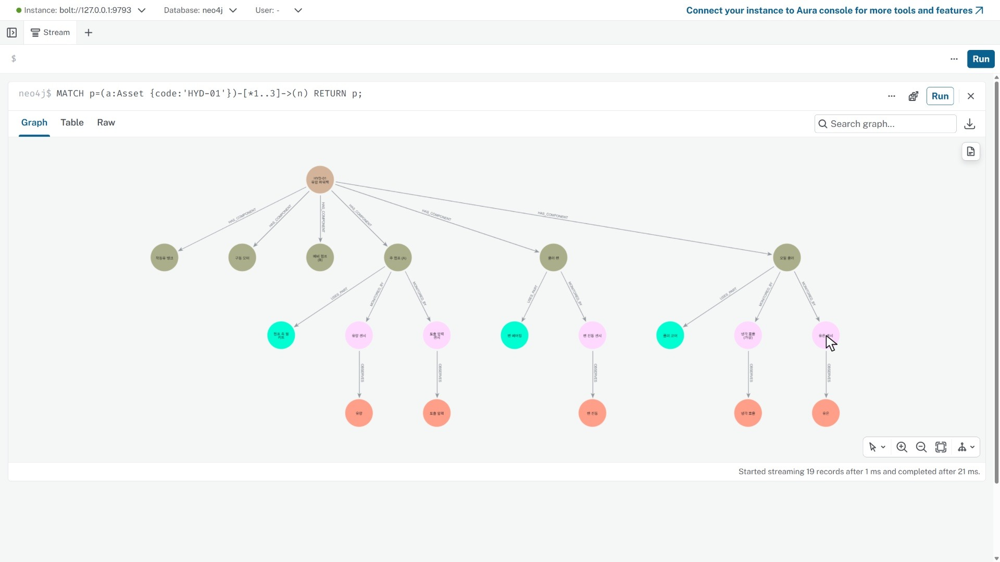
설비 → 구성요소 → 센서·부품 → 물리량 · 누르면 크게 보기상세 창을 열고 빈 배경을 클릭한 뒤 Zoom to fit을 누르세요. 빈 배경을 끌어 위치를 옮기고 노드 위에서 휠을 올려 확대합니다. HYD-01과 오일 쿨러를 차례로 클릭해 오른쪽 Node details를 읽으세요.
HYD-01은 Asset, 오일 쿨러는 Component입니다. 쿨러의 id는 comp:cooler입니다.
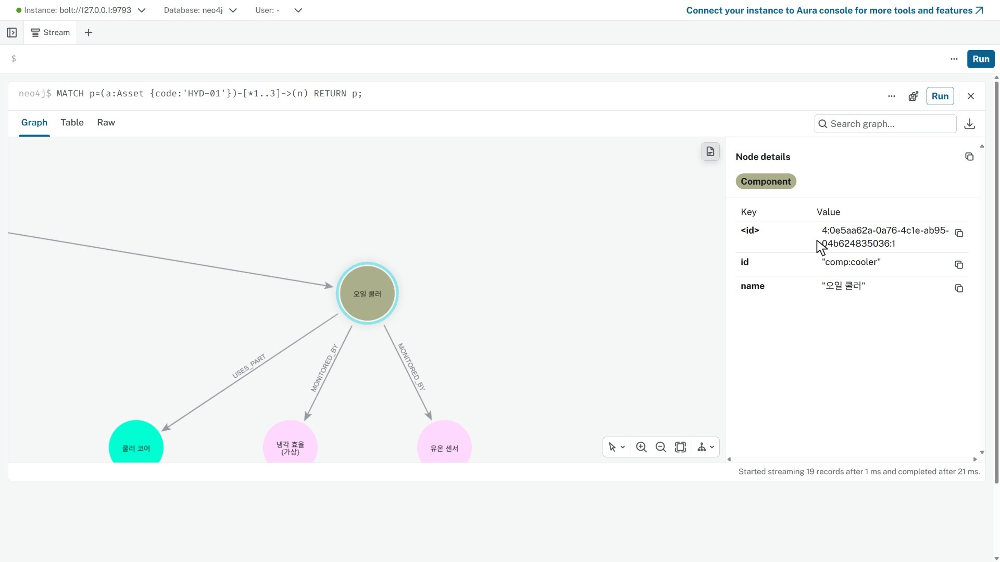
오일 쿨러 선택과 식별자·이름 확인 · 누르면 크게 보기08 쿨러 하나를 쿼리로 찾기
입력칸에서 :clear를 실행해 앞 카드를 정리한 뒤 다음 문장을 실행하세요. :clear는 DB 데이터를 삭제하지 않습니다.
MATCH (c:Component {id:'comp:cooler'})
RETURN c;c는 찾은 노드를 가리키는 변수, Component는 노드의 레이블입니다. id는 속성 이름, comp:cooler는 찾을 속성값입니다. 그림에 표시된 오일 쿨러는 name 속성값입니다.
쿨러 노드를 클릭해 id와 name을 확인하세요.
노드 하나가 나오며 id는 comp:cooler, 이름은 오일 쿨러입니다. 관계가 사라진 것이 아니라 이번 결과에 노드만 반환한 것입니다.
09 센서와 관계를 클릭해서 읽기
MATCH (c:Component {id:'comp:cooler'})-[r:MONITORED_BY]->(s:Sensor)
RETURN c,r,s;c와 s는 노드 변수, r은 관계 변수입니다. Component·Sensor는 노드 레이블, MONITORED_BY는 관계 유형입니다.
쿨러1개·센서2개, 노드3개·관계2개입니다.
유온 센서를 클릭해 tag·unit·virtual을 읽고 냉각 효율 노드와 비교하세요.
유온 센서는 TS1·℃·virtual=false입니다. 냉각 효율은 CE·%·virtual=true입니다.
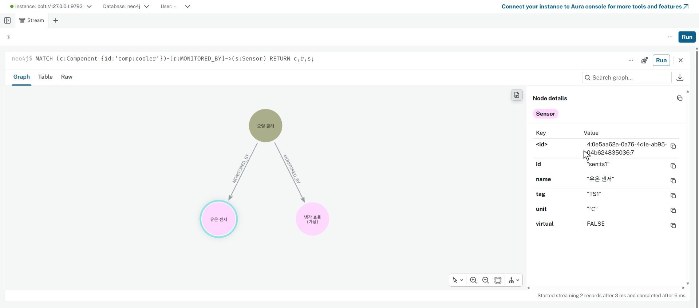
유온 센서의 태그와 단위 · 누르면 크게 보기MONITORED_BY 화살표를 클릭하세요. 오른쪽이 Relationship details로 바뀝니다. 쿨러에서 센서로 향하는 관계이며 배관의 흐름을 뜻하지 않습니다.
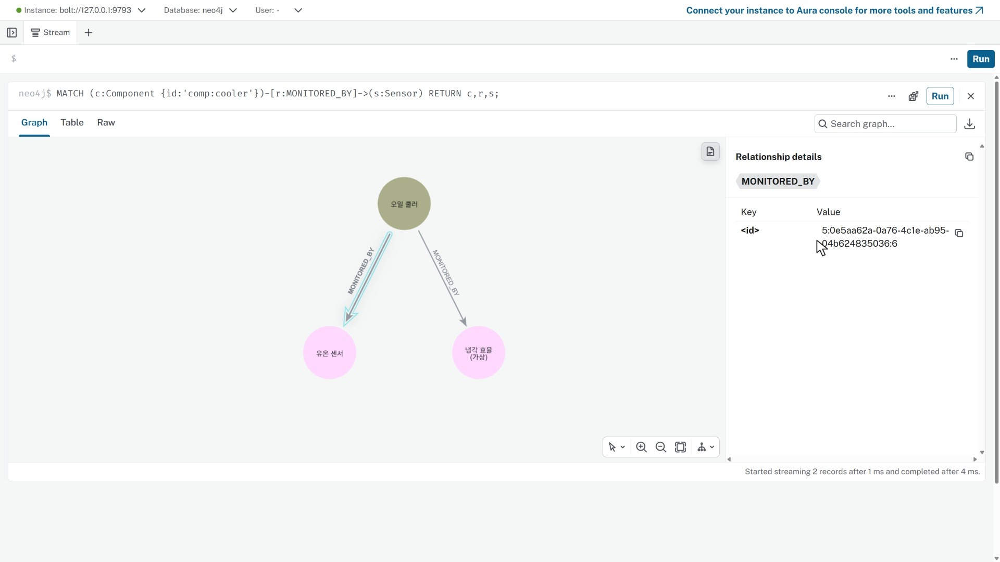
노드 정보와 구별되는 관계 정보 · 누르면 크게 보기10 센서에서 물리량까지 따라가기
MATCH p=(a:Asset {code:'HYD-01'})-[:HAS_COMPONENT]->(c:Component)
-[:MONITORED_BY]->(s:Sensor)-[:OBSERVES]->(v:StateVariable)
RETURN p;센서가 연결된 구성요소3개에서 관측 경로5개가 이어집니다. 결과는 노드14개·관계13개입니다.
유온 센서 아래의 유온을 클릭하세요. 센서와 물리량 노드를 구분해 읽습니다.
유온은 StateVariable, id는 sv:ts1입니다. 단위 ℃, normal=48, limit=65는 등록된 기준이며 현재 측정값이 아닙니다.
 유온 노드를 클릭해 등록된 기준 확인 · 누르면 크게 보기
유온 노드를 클릭해 등록된 기준 확인 · 누르면 크게 보기11 질문에 맞춰 조건과 반환값 바꾸기
MATCH p=(a:Asset {code:'HYD-01'})-[:HAS_COMPONENT]->(c:Component)
-[:MONITORED_BY]->(s:Sensor)-[:OBSERVES]->(v:StateVariable)
WHERE s.tag = 'TS1'
RETURN p;HYD-01 → 오일 쿨러 → 유온 센서 → 유온의 경로만 남습니다. 노드4개·관계3개입니다. 다른 센서를 삭제한 것이 아닙니다.
 TS1 조건으로 좁힌 경로 · 누르면 크게 보기
TS1 조건으로 좁힌 경로 · 누르면 크게 보기같은 경로에서 필요한 속성만 받아 표로 비교합니다.
MATCH p=(a:Asset {code:'HYD-01'})-[:HAS_COMPONENT]->(c:Component)
-[:MONITORED_BY]->(s:Sensor)-[:OBSERVES]->(v:StateVariable)
WHERE s.tag = 'TS1'
RETURN c.name AS component, s.tag AS tag, v.name AS quantity,
v.unit AS unit, v.normal AS normal, v.limit AS limit;TS1·유온·℃·48·65가 한 행에 나옵니다. 방금 클릭한 노드의 값과 대조하세요.
이번에는 전체 관측 경로에서 한계가 등록된 항목만 고릅니다.
MATCH p=(a:Asset {code:'HYD-01'})-[:HAS_COMPONENT]->(c:Component)
-[:MONITORED_BY]->(s:Sensor)-[:OBSERVES]->(v:StateVariable)
WHERE v.limit IS NOT NULL
RETURN s.tag AS tag, v.name AS quantity, v.unit AS unit, v.limit AS limit
ORDER BY tag;PS1·TS1·VS1 세 행이 나옵니다. CE·FS1은 한계가 없어 제외됐습니다. null은 0이 아닙니다.
12 교체 부품 가지 탐색하기
MATCH p=(:Asset {code:'HYD-01'})-[:HAS_COMPONENT]->(c:Component)
-[:USES_PART]->(part:Part)
RETURN p;설비 → 장치3개 → 부품3개, 노드7개·관계6개입니다.
쿨러 코어 노드를 클릭해 레이블·이름·품번을 확인하세요.
쿨러 코어는 Part이며 partNo=P-CLR-CORE입니다. 오일 쿨러 장치와 별개입니다. 등록된 사용 관계만으로 현재 재고나 교체 필요를 판단하지 않습니다.
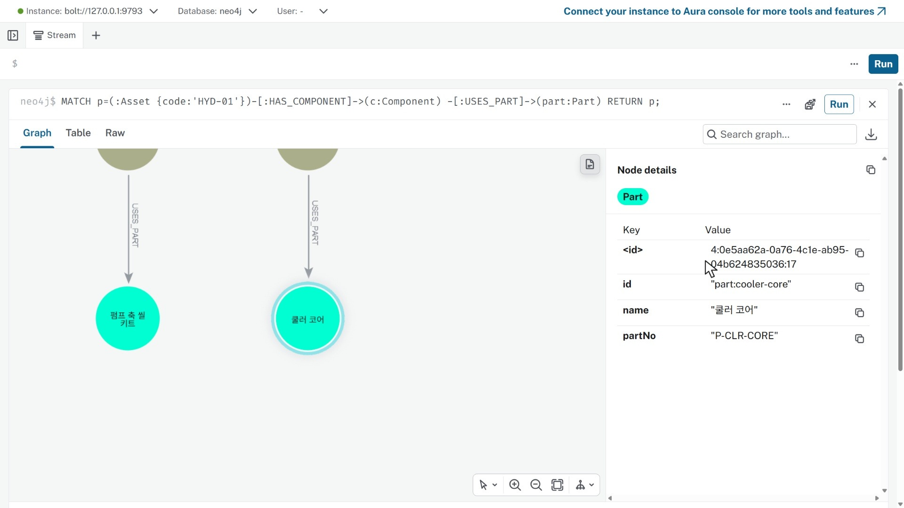
쿨러 코어의 품번 확인 · 누르면 크게 보기13 그림에서 센 수와 집계 비교하기
MATCH p=(:Asset {code:'HYD-01'})-[:HAS_COMPONENT]->(c:Component)
-[:MONITORED_BY]->(s:Sensor)
RETURN p;쿨러·주 펌프·팬 아래 센서를 직접 센 뒤 같은 연결을 집계하세요.
MATCH (:Asset {code:'HYD-01'})-[:HAS_COMPONENT]->(c:Component)
-[:MONITORED_BY]->(s:Sensor)
RETURN c.id AS component_id, c.name AS component,
collect(DISTINCT s.tag) AS tags, count(DISTINCT s) AS channels
ORDER BY channels DESC, component_id;쿨러 CE·TS1은2개, 주 펌프 FS1·PS1은2개, 팬 VS1은1개입니다. tags 목록의 개수와 channels를 비교합니다.
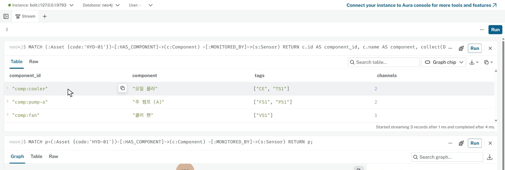
목록과 개수를 함께 확인 · 누르면 크게 보기14 전체 지도에서 정리하고 저장하기
MATCH p=(a:Asset {code:'HYD-01'})-[*1..3]->(n)
RETURN p;예비 펌프를 클릭해 노드가 존재함을 확인하세요. 센서 집계에서 빠진 까닭을 전체 지도에서 찾아봅니다.
comp:pump-b 노드는 존재하지만 제공 예제에는 센서로 이어지는 경로가 없습니다. 표에서 빠졌다는 사실과 장치가 없다는 판단은 다릅니다.
상세 창을 접고 빈 배경을 눌러 선택을 푼 뒤 Zoom to fit을 누릅니다. 그래프 오른쪽 위 Download as PNG로 그림을 받으세요.
왼쪽 패널의 Queries → 위쪽 +로 새 쿼리 탭을 엽니다. 첫 줄은 // 설비 연결 탐색으로 적고 실행한 문장과 실제 확인 기록을 넣으세요. 탭을 닫고 왼쪽 목록에서 다시 엽니다.
작성한 문장과 확인 기록이 그대로 보입니다.
Queries의 Download all로 CSV를 받습니다. PNG와 CSV를 재부팅 전에 USB 또는 개인 클라우드에 보관하세요. 다음 포털 탐색은 별도 시작본으로 시작합니다.